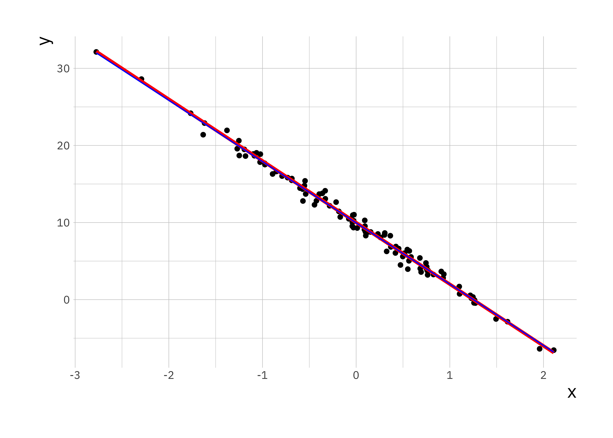

2 Practical: Linear regression
In this practical you will go through some of the basics of linear modeling in R as well as simulating data. The practical contains the following elements:
- simulate linear regression model
- investigate parameters
- characterize prediction accuracy
- correlation of real world data
We will use reshape2, ggplo2, and bbmle packages. Run the following command to make sure they are installed and loaded
## Loading required package: stats42.1 Data
For this practical you will require three datasets:
2.2 Simulating data
You will simulate data based on the simple linear regression model:
\[ y_i = \beta_0 + \beta_1\, x_i + \epsilon_i, \]
where \((x_i, y_i)\) represent the \(i\)-th measurement pair with \(i = 1, \ldots, N\), \(\beta_0\) and \(\beta_1\) are regression coefficients representing intercept and slope respectively. We assume the noise term \(\epsilon_i \sim N(0, \sigma^2)\) is normally distributed with zero mean and variance \(\sigma^2\).
First we define the values of the parameters of linear regression \((\beta_0, \beta_1, \sigma^2)\):
b0 <- 10 # regression coefficient for intercept
b1 <- -8 # regression coefficient for slope
sigma2 <- 0.5 # noise varianceIn the next step we will simulate \(N = 100\) covariates \(x_i\) by randomly sampling from the standard normal distribution:
set.seed(198) # set a seed to ensure data is reproducible
N <- 100 # no of data points to simulate
x <- rnorm(N, mean = 0, sd = 1) # simulate covariateNext we simulate the error term:
# simulate the noise terms, rnorm requires the standard deviation
e <- rnorm(N, mean = 0, sd = sqrt(sigma2))Finally we have all the parameters and variables to simulate the response variable \(y\):
We will plot our data using ggplot2 so the data need to be in a data.frame object:
# Set up the data point
sim_data <- data.frame(x = x, y = y)
# create a new scatter plot using ggplot2
ggplot(sim_data, aes(x = x, y = y)) +
geom_point()We define the true data y_true to be the true linear relationship between the covariate and the response without the noise.
# Compute true y values
y_true <- b0 + b1 * x
# Add the data to the existing data frame
sim_data$y_true <- y_trueNow we will add the true values of \(y\) to the scatter plot:
2.3 Fitting simple linear regression model
2.3.1 Least squared estimation
Now that you have simulated data you can use it to regress \(y\) on \(x\), since this is simulated data we know the parameters and can make a comparison. In R we can use the function lm() for this, by default it implements a least squares estimate:
# Use the lm function to fit the data
ls_fit <- lm(y ~ x, data = sim_data)
# Display a summary of fit
summary(ls_fit)##
## Call:
## lm(formula = y ~ x, data = sim_data)
##
## Residuals:
## Min 1Q Median 3Q Max
## -1.69905 -0.41534 0.02851 0.41265 1.53651
##
## Coefficients:
## Estimate Std. Error t value Pr(>|t|)
## (Intercept) 9.95698 0.06701 148.6 <2e-16 ***
## x -7.94702 0.07417 -107.1 <2e-16 ***
## ---
## Signif. codes: 0 '***' 0.001 '**' 0.01 '*' 0.05 '.' 0.1 ' ' 1
##
## Residual standard error: 0.6701 on 98 degrees of freedom
## Multiple R-squared: 0.9915, Adjusted R-squared: 0.9914
## F-statistic: 1.148e+04 on 1 and 98 DF, p-value: < 2.2e-16The output for lm() is an object (in this case ls_fit) which contains multiple variables. To access them there are some built in functions, e.g. coef(), residuals(), and fitted(). We will explore these in turn:
## (Intercept) x
## 9.956981 -7.947016# Extract intercept and slope
b0_hat <- ls_coef[1] # alternative ls_fit$coefficients[1]
b1_hat <- ls_coef[2] # alternative ls_fit$coefficients[2]
# Generate the predicted data based on estimated parameters
y_hat <- b0_hat + b1_hat * x
sim_data$y_hat <- y_hat # add to the existing data frame
# Create scatter plot and lines for the original and fitted
lr_plot <- ggplot(sim_data, aes(x = x, y = y)) +
geom_point() +
geom_line(aes(x = x, y = y_true), colour = "red", size = 1.3) +
# plot predicted relationship in blue
geom_line(aes(x = x, y = y_hat), colour = "blue")
# force Rstudio to display the plot
print(lr_plot)
The estimated parameters and the plot shows a good correspondence between fitted regression parameters and the true relationship between \(y\) and \(x\). We can check this by plotting the residuals, this data is stored as the residuals parameter in the ls_fit object.
# Residuals
ls_residual <- residuals(ls_fit) # can also be accessed via ls_fit$residuals
# scatter plot of residuals
plot(ls_residual)A better way of summarising the data is to visualise them as a histogram:
We expect the mean and variance of the residuals to be close to the level used to generate the data.
## [1] -7.157903e-18## [1] 0.4444955This is as expected since subtracting a good fit from the data leaves \(\epsilon\) which has \(0\) mean and \(0.5\) variance.
2.3.2 Maximum likelihood estimation
Next you will look at maximum likelihood estimation based on the same data you simulated earlier. This is a bit more involved as it requires you to explicitly write the function you wish to minimise. The function we use is part of the bbmle package.
# Loading the required package
library(bbmle)
# function that will be minimised. It takes as arguments all parameters
# Here we are helped by the way R works we don't have to explicitly pass x.
# The function will use the existing estimates in the environment
mle_ll <- function(beta0, beta1, sigma) {
# first we predict the response variable based on the guess for our response
y_pred = beta0 + beta1 * x
# next we calculate the normal distribution based on the predicted value
# the guess for sigma and return the log
log_lh <- dnorm(y, mean = y_pred, sd = sigma, log = TRUE)
# We returnr the negative sum of the log likelihood
return(-sum(log_lh))
}
# This is the function that actually performs the estimation
# The first variable here is the function we will use
# The second variable passed is a list of initial guesses of parameters
mle_fit <- mle2(mle_ll, start = list(beta0 = -1, beta1 = 20, sigma = 10))
# With the same summary function as above we can output a summary of the fit
summary(mle_fit)## Maximum likelihood estimation
##
## Call:
## mle2(minuslogl = mle_ll, start = list(beta0 = -1, beta1 = 20,
## sigma = 10))
##
## Coefficients:
## Estimate Std. Error z value Pr(z)
## beta0 9.957019 0.066336 150.099 < 2.2e-16 ***
## beta1 -7.947005 0.073426 -108.231 < 2.2e-16 ***
## sigma 0.663347 0.046904 14.143 < 2.2e-16 ***
## ---
## Signif. codes: 0 '***' 0.001 '**' 0.01 '*' 0.05 '.' 0.1 ' ' 1
##
## -2 log L: 201.7011The estimated parameters using the maximum likelihood are also a very good estimate of the true values.
2.4 Effect of variance
Now investigate the quality of the predictions further by simulating more data sets and seeing how the variance affects the quality of the fit as indicated by the mean-squared error (mse).
To start you will define some parameter for the simulations, the number of simulations to run for each variance, and the variance values to try.
# number of simulations for each noise level
n_simulations <- 100
# A vector of noise levels to try
sigma_v <- c(0.1, 0.4, 1.0, 2.0, 4.0, 6.0, 8.0)
n_sigma <- length(sigma_v)
# Create a matrix to store results
mse_matrix <- matrix(0, nrow = n_simulations, ncol = n_sigma)
# name row and column
rownames(mse_matrix) <- c(1:n_simulations)
colnames(mse_matrix) <- sigma_vNext we will write a nested for loop. The first loop will be over the variances and a second loop over the number of repeats. We will simulate the data, perform a fit with lm(). We can use the fitted() function on the resulting object to extract the fitted values \(\hat{y}\) and use this to compute the mean-squared error from the true value \(y\).
# loop over variance
for (i in 1:n_sigma) {
sigma2 <- sigma_v[i]
# for each simulation
for (it in 1:n_simulations) {
# Simulate the data
x <- rnorm(N, mean = 0, sd = 1)
e <- rnorm(N, mean = 0, sd = sqrt(sigma2))
y <- b0 + b1 * x + e
# set up a data frame and run lm()
sim_data <- data.frame(x = x, y = y)
lm_fit <- lm(y ~ x, data = sim_data)
# compute the mean squared error between the fit and the actual y's
y_hat <- fitted(lm_fit)
mse_matrix[it, i] <- mean((y_hat - y)^2)
}
}We created a matrix to store the mse values, but to plot them using ggplot2 we have to convert them to a data.frame. This can be done using the melt() function form the reshape2 library. We can compare the results using boxplots.
library(reshape2)
# convert the matrix into a data frame for ggplot2
mse_df <- melt(mse_matrix)
# rename the columns
names(mse_df) <- c("Simulation", "variance", "MSE")
# now use a boxplot to look at the relationship between
# mean-squared prediction error and variance
mse_plt <- ggplot(mse_df, aes(x = variance, y = MSE)) +
geom_boxplot(aes(group = variance))
print(mse_plt)You can see that the variances of the mse and the value of the mse go up with increasing variance in the simulation.
What changes do you need to make to the above function to plot the accuracy of the estimated regression coefficients as a function of variance?
2.5 Exercise
2.5.1 Part I
Read in the data in stork.txt, compute the correlation and comment on it.
The data represents no of storks (column 1) in Oldenburg Germany from \(1930 - 1939\) and the number of people (column 2).
2.5.2 Part II
Fit a simple linear model to the two data sets supplied (lr_data1.Rdata and lr_data2.Rdata). In both files the \((x,y)\) data is saved in two vectors, \(x\) and \(y\).
Download the data from Canvas, you can read it into R and plot it with the following commands:
Fit the linear model and comment on the differences between the data.
2.5.3 Part III
Investigate how the sample size will affect the quality of the fit using mse, use the code for investigating the affect of variance as inspiration.